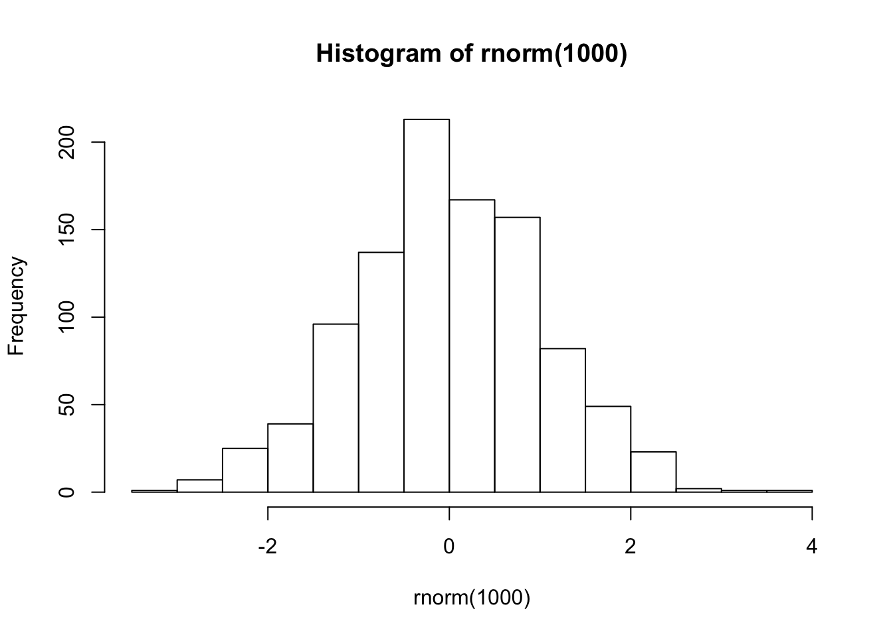
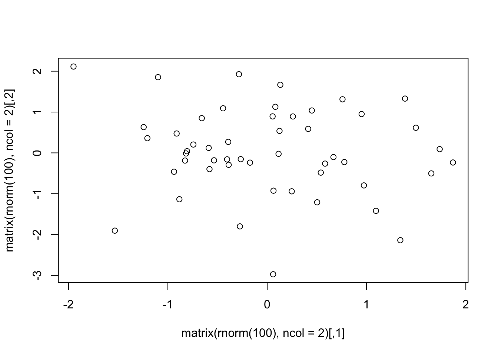
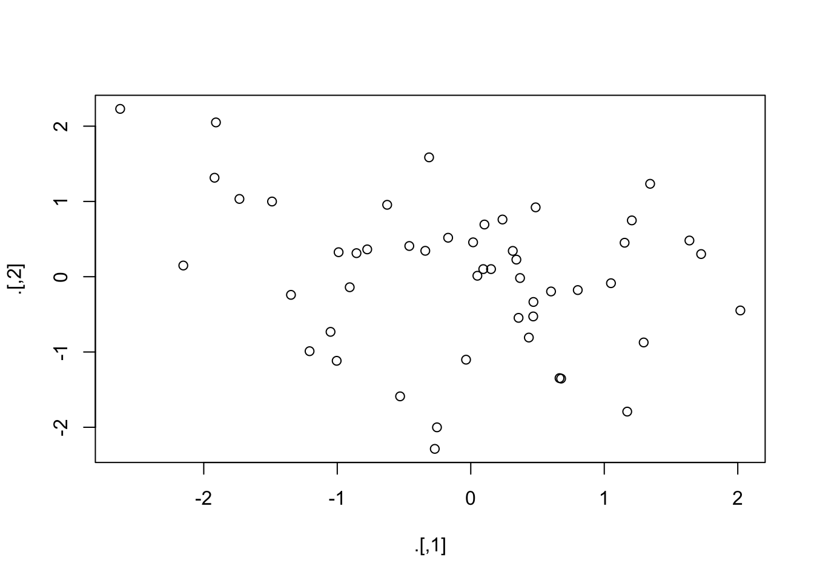
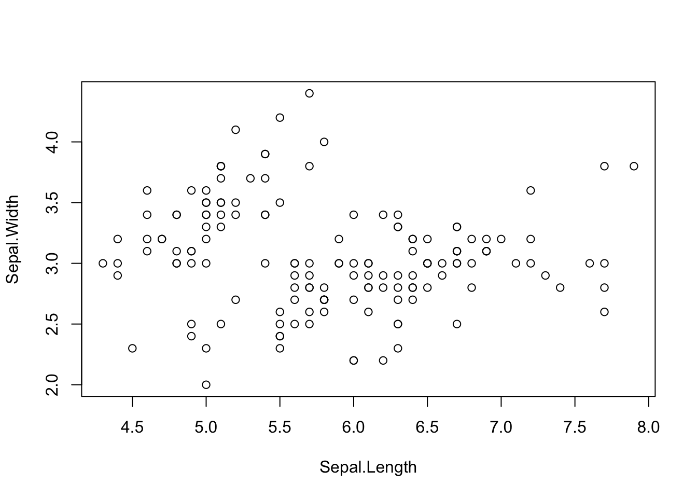
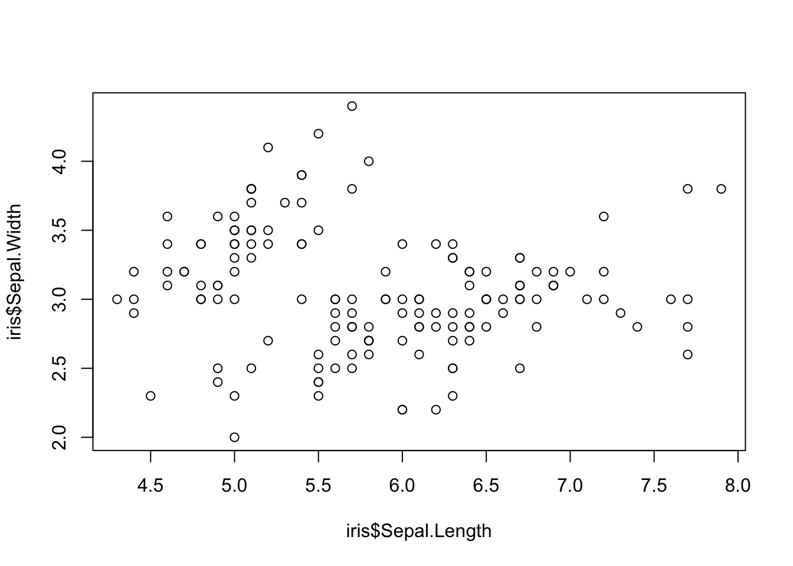

Lab 2 - R basics
R as a calculator
2 + 2 # add numbers## [1] 42 * pi # multiply by a constant## [1] 6.2831857 + runif(1) # add a Uniform(0,1) random number## [1] 7.572594pnorm(1.96,0,1) # standard normal cdf## [1] 0.97500213^4 # powers## [1] 81sqrt(4^2) # functions## [1] 4log(exp(1))## [1] 1log(100, base = 10)## [1] 2rnorm(5) # generate 5 random numbers from N(0,1)## [1] -0.7679783 -0.6682764 0.2426219 0.1345748 -1.4206845Assigning values to R objects
A key action in R is to store values in the form of R objects, and to examine the value of R objects.
val = 3
val## [1] 3print(val)## [1] 3# assign value to two objects
a = b = 3
a## [1] 3b## [1] 3Val = 7 # case-sensitive!
print(c(val, Val))## [1] 3 7We can work with (and store) sequences and repetitions
mySeq = 1:6
mySeq## [1] 1 2 3 4 5 6myOtherSeq = seq(1.1, 11.1, by = 2)
myOtherSeq## [1] 1.1 3.1 5.1 7.1 9.1 11.1length(myOtherSeq)## [1] 6fours = rep(4, 6)
fours## [1] 4 4 4 4 4 4# This is a comment: here is an example of non-npnorm(-1.96,0,1) -umeric data
depts = c('espm', 'pmb', 'stats')
depts## [1] "espm" "pmb" "stats"If we don’t assign the output of a command to an object, we haven’t saved it for later use. R gives us a lot of flexibility (within certain rules) for assigning to (parts of) objects from (parts of) other objects.
How to be lazy
If you’re starting to type something you’ve typed before, or the long name of an R object or function, STOP! You likely don’t need to type all of that.
- Tab completion
- Command history
- up/down arrows
- Ctrl-{up arrow} or Command-{up arrow}
- R Studio: select a line or block for execution
- Put your code in a file and use
source(). For example:source('MyScript.R')
Vectors in R
The most basic form of an R object is a vector. In fact, individual (scalar) values are vectors of length one.
We can concatenate values into a vector with c().
# numeric vector
nums = c(1.1, 3, -5.7)
devs = rnorm(5)
devs## [1] 0.712069279 0.283053683 -0.711390624 0.003061056 -0.519083628# logical vector
bools = c(TRUE, FALSE, TRUE)
bools## [1] TRUE FALSE TRUEWorking with indices and subsets
vals = seq(2, 12, by = 2)
vals## [1] 2 4 6 8 10 12vals[3]## [1] 6vals[3:5]## [1] 6 8 10vals[c(1, 3, 6)]## [1] 2 6 12vals[-c(1, 3, 6)]## [1] 4 8 10vals[c(rep(TRUE, 3), rep(FALSE, 2), TRUE)]## [1] 2 4 6 12# list values >= 5
vals[vals >= 5]## [1] 6 8 10 12# list index whose value = 4
which(vals == 4)## [1] 2Vectorized calculations and comparisons
At the core of R is the idea of doing calculations on entire vectors.
vec1 = sample(1:5, 10, replace = TRUE)
vec2 = sample(1:5, 10, replace = TRUE)
vec1## [1] 4 4 2 3 2 3 2 5 4 4vec2## [1] 5 4 5 4 5 1 2 4 5 1vec1 + vec2## [1] 9 8 7 7 7 4 4 9 9 5vec1^vec2## [1] 1024 256 32 81 32 3 4 625 1024 4vec1 >= vec2## [1] FALSE TRUE FALSE FALSE FALSE TRUE TRUE TRUE FALSE TRUEvec1 <= 3## [1] FALSE FALSE TRUE TRUE TRUE TRUE TRUE FALSE FALSE FALSE# using 'or'
vec1 <= 0 | vec1 >= 3## [1] TRUE TRUE FALSE TRUE FALSE TRUE FALSE TRUE TRUE TRUE# using 'and'
vec1 <= 0 & vec1 >= vec2## [1] FALSE FALSE FALSE FALSE FALSE FALSE FALSE FALSE FALSE FALSEvec1 == vec2## [1] FALSE TRUE FALSE FALSE FALSE FALSE TRUE FALSE FALSE FALSEvec1 != vec2## [1] TRUE FALSE TRUE TRUE TRUE TRUE FALSE TRUE TRUE TRUE# careful:
vec1 = vec2
identical(vec1, vec2)## [1] TRUEAn important related concept is that of recycling
vec3 = sample(1:5, 5, replace = TRUE)
vec4 = sample(1:5, 3, replace = TRUE)
vec1## [1] 5 4 5 4 5 1 2 4 5 1vec3## [1] 3 5 4 1 1vec4## [1] 2 1 1vec1 + vec3## [1] 8 9 9 5 6 4 7 8 6 2vec1 + vec4## Warning in vec1 + vec4: longer object length is not a multiple of shorter
## object length## [1] 7 5 6 6 6 2 4 5 6 3Question: Tell me what’s going on. What choices were made by the R developers?
R is a functional language
- Operations are carried out with functions. Functions take objects as inputs and return objects as outputs.
- An analysis can be considered a pipeline of function calls, with output from a function used later in a subsequent operation as input to another function.
- We can embed function calls:
set.seed(1) # set a random seed, so your random numbers won't be different when you generate them next time.
hist(rnorm(1000))
Getting help about a function
To get information about a function you know exists, use help or ?, e.g., ?lm. For information on a general topic, use apropos or ??
Basic kinds of R objects
Vectors are not the only kinds of R objects.
Vectors
Vectors of various types (numeric (i.e., decimal/floating point/double), integer, boolean, character), all items must be of the same type
Matrices
Matrices of various types, all items must be of the same type
mat = matrix(c(1,0,5,2,1,6,3,4,0),3,3)
t(mat) %*% mat## [,1] [,2] [,3]
## [1,] 26 32 3
## [2,] 32 41 10
## [3,] 3 10 25dim(mat)## [1] 3 3# * is element-wise product
t(mat) * mat## [,1] [,2] [,3]
## [1,] 1 0 15
## [2,] 0 1 24
## [3,] 15 24 0Some linear algera
# vector without declaration of column/row vector
z = c(1,2,3)
# column vector 3 by 1
x = matrix(c(1,2,3),3,1)
x## [,1]
## [1,] 1
## [2,] 2
## [3,] 3# transpose
t(x)## [,1] [,2] [,3]
## [1,] 1 2 3# row vector 1 by 3
y = matrix(c(3,2,1),1,3)
y## [,1] [,2] [,3]
## [1,] 3 2 1# sum
c(y %*% rep(1,length(y)))## [1] 6sum(y)## [1] 6# L-2 norm of a vector
norm(x,"f")## [1] 3.741657# inner product
t(x) %*% x## [,1]
## [1,] 14z %*% z## [,1]
## [1,] 14# outer product
x %*% t(x)## [,1] [,2] [,3]
## [1,] 1 2 3
## [2,] 2 4 6
## [3,] 3 6 9z %o% z## [,1] [,2] [,3]
## [1,] 1 2 3
## [2,] 2 4 6
## [3,] 3 6 9# recycling mat
mat## [,1] [,2] [,3]
## [1,] 1 2 3
## [2,] 0 1 4
## [3,] 5 6 0# diagonal of matrix
diag(mat)## [1] 1 1 0# determinant of matrix
det(mat)## [1] 1# trace of matrix
sum(diag(mat))## [1] 2# positive definite symmetric matrix A
A = t(mat) %*% mat
A## [,1] [,2] [,3]
## [1,] 26 32 3
## [2,] 32 41 10
## [3,] 3 10 25# inverse
solve(A)## [,1] [,2] [,3]
## [1,] 925 -770 197
## [2,] -770 641 -164
## [3,] 197 -164 42solve(A) %*% A## [,1] [,2] [,3]
## [1,] 1.000000e+00 9.094947e-13 0.000000e+00
## [2,] 2.472689e-12 1.000000e+00 9.094947e-13
## [3,] -2.273737e-13 1.136868e-13 1.000000e+00A %*% solve(A)## [,1] [,2] [,3]
## [1,] 1.000000e+00 2.387424e-12 6.821210e-13
## [2,] 1.193712e-12 1.000000e+00 1.136868e-13
## [3,] 9.094947e-13 0.000000e+00 1.000000e+00Question: Why solve(A) %*% A does not produce the identity matrix?
# eigenvalues and eigenvector
myeigen = eigen(A)
# spectral decomposition
D = diag(myeigen$values)
D## [,1] [,2] [,3]
## [1,] 68.53918 0.0000 0.0000000000
## [2,] 0.00000 23.4602 0.0000000000
## [3,] 0.00000 0.0000 0.0006219127C = myeigen$vectors
C %*% D %*% t(C)## [,1] [,2] [,3]
## [1,] 26 32 3
## [2,] 32 41 10
## [3,] 3 10 25# see if A = CDC'
C %*% D %*% t(C) == A## [,1] [,2] [,3]
## [1,] TRUE FALSE FALSE
## [2,] FALSE FALSE FALSE
## [3,] FALSE FALSE FALSE# square root of A
C %*% sqrt(D) %*% t(C)## [,1] [,2] [,3]
## [1,] 3.2935597 3.889999 -0.1427347
## [2,] 3.8899989 4.971968 1.0711855
## [3,] -0.1427347 1.071185 4.8818222# it is not sqrt(A)
sqrt(A)## [,1] [,2] [,3]
## [1,] 5.099020 5.656854 1.732051
## [2,] 5.656854 6.403124 3.162278
## [3,] 1.732051 3.162278 5.000000More linear algebra
X = t(C %*% sqrt(D) %*% matrix(rnorm(100*3),3,100))
head(X) # first few rows of X## [,1] [,2] [,3]
## [1,] 4.1726600 6.8973855 7.2325596
## [2,] 0.9207647 1.3503394 0.6979599
## [3,] 6.4135178 5.8469261 -7.4524216
## [4,] 5.6127043 6.5676240 -0.7165509
## [5,] -6.1555741 -9.8891219 -9.6958554
## [6,] -0.1344931 -0.8963754 -3.0779498cov(X) # sample covariance matirx## [,1] [,2] [,3]
## [1,] 28.126542 34.567516 2.986385
## [2,] 34.567516 44.062289 9.848508
## [3,] 2.986385 9.848508 24.522348mysvd <- svd(X)
mysvd$d## [1] 85.6217244 48.0160946 0.2709681D = diag(mysvd$d[1:2])
X_recon = mysvd$u[,1:2] %*% D %*% t(mysvd$v[,1:2]) # reconstruct X using 2-dim basis
cov(X_recon)## [,1] [,2] [,3]
## [1,] 28.125483 34.567697 2.986006
## [2,] 34.567697 44.062721 9.848675
## [3,] 2.986006 9.848675 24.522234Lists
Collections of disparate or complicated objects
myList = list(stuff = 3, mat = matrix(1:4, nrow = 2),
moreStuff = c("china", "japan"), list(5, "bear"))
myList## $stuff
## [1] 3
##
## $mat
## [,1] [,2]
## [1,] 1 3
## [2,] 2 4
##
## $moreStuff
## [1] "china" "japan"
##
## [[4]]
## [[4]][[1]]
## [1] 5
##
## [[4]][[2]]
## [1] "bear"myList[[1]] # result is not (usually) a list (unless you have nested lists)## [1] 3identical(myList[[1]], myList$stuff)## [1] TRUEmyList$moreStuff[2]## [1] "japan"myList[[4]][[2]]## [1] "bear"myList[1:3] # subset of a list is a list## $stuff
## [1] 3
##
## $mat
## [,1] [,2]
## [1,] 1 3
## [2,] 2 4
##
## $moreStuff
## [1] "china" "japan"myList$newOne = 'more weird stuff'
names(myList)## [1] "stuff" "mat" "moreStuff" "" "newOne"Lists can be used as vectors of complicated objects. E.g., suppose you have a linear regression for each value of a stratifying variable. You could have a list of regression fits. Each regression fit will itself be a list, so you’ll have a list of lists.
R data frame
A data frame is used for storing tabular data. It is a list of vectors of equal length. Some R functions work properly only on the data frame.
df = data.frame(X) # turning a matrix into a data frame
colnames(df) = c("y","x1","x2") # assigning variable names (column names)
head(df)## y x1 x2
## 1 4.1726600 6.8973855 7.2325596
## 2 0.9207647 1.3503394 0.6979599
## 3 6.4135178 5.8469261 -7.4524216
## 4 5.6127043 6.5676240 -0.7165509
## 5 -6.1555741 -9.8891219 -9.6958554
## 6 -0.1344931 -0.8963754 -3.0779498head(df$x1) # access variable by name## [1] 6.8973855 1.3503394 5.8469261 6.5676240 -9.8891219 -0.8963754df$group = sample(1:2,100,T) # randomly assign into two groups
aggregate(df[,-4], list(df$group), mean) # group means## Group.1 y x1 x2
## 1 1 0.3325595 0.5332983 0.52105084
## 2 2 0.5760188 0.6835068 -0.04646233aggregate(df[,-4], list(df$group), var) # group variances## Group.1 y x1 x2
## 1 1 33.12008 55.81088 28.62922
## 2 2 20.94507 26.65728 18.48151A data frame can contain variables in different types.
age = c(32,34,23)
sex = c("M","F","M")
healthy = c(TRUE, FALSE, FALSE)
dat = data.frame(age,sex,healthy)
class(dat)## [1] "data.frame"dat## age sex healthy
## 1 32 M TRUE
## 2 34 F FALSE
## 3 23 M FALSER for programming
For-loop
The for-loop iterates commands over a set of indexes. The below is to calculate the sum and product of x. The tot and prd should be properly pre-defined before the for-loop below.
x = rnorm(100)
tot = 0
prd = 1
for (i in 1:length(x)){
tot = tot + x[i]
prd = prd * x[i]
}
tot## [1] -2.012583prd## [1] -7.533576e-26The R for-loop can be iterated over any set of R objects.
for (j in c(1,2,-1,sqrt(2))){
print(j)
}## [1] 1
## [1] 2
## [1] -1
## [1] 1.414214for (j in c("apple", "banana", "orange")){
print(j)
}## [1] "apple"
## [1] "banana"
## [1] "orange"Function
An R function takes R objects as inputs, and return an R object (vector, matrix, plot, list, etc). Let’s see a simple example.
square = function(x){
y = x * x
return(y)
}
square(2)## [1] 4In the above, local variables x and y are declared inside a function, and they can be accessed only inside that function.
identical(y, 4)## [1] FALSEIn the meanwhile, global variables are declared outside any function, and they can be accessed (used) out/inside any function. However, using global variables inside a function may be a bad programming practice since global variables can be changed easily by any function or R console.
g.var = 20
div20 = function(x){
out = x / g.var
return(out)
}
div20(20)## [1] 1g.var = 10
div20(20)## [1] 2To void this issue, a local g.var variable is defined in the function div20(). Observe that global and local variables have the same name, but different values.
div20 = function(x){
g.var = 20
out = x / g.var
print(g.var)
return(out)
}
div20(20)## [1] 20## [1] 1g.var## [1] 10You can also return a vector output from a function.
myfun1 = function(x,y) {
prod = x * y
sum = x + y
return(c(prod,sum))
}
myfun1(2,3)## [1] 6 5An R function can return a list object. This is very useful when you have different types of variables as output.
myfun2 = function(x,y) {
prod = x * y
sum = x + y
out = list(prod,sum)
names(out) = c("prod","sum")
return(out)
}
ans = myfun2(2,3)
ans## $prod
## [1] 6
##
## $sum
## [1] 5Advanced R
R data table
Roughly speaking, data.table is data.frame with extra features. data.frame is part of base R, and data.table is a package that extends data.frame. Two of its most notable features are speed and cleaner syntax. However, that syntax is different from the standard R syntax for data.frame. You will enjoy great performance of data.table after the relatively steep learning curve.
dat = data.table(age, sex, healthy)
class(dat)## [1] "data.table" "data.frame"dat## age sex healthy
## 1: 32 M TRUE
## 2: 34 F FALSE
## 3: 23 M FALSEThe data manipulation using data.table has a general form: DT[i, j, by], which means “Take DT, subset rows using i, then calculate j grouped by by”
diamondsDT <- data.table(ggplot2::diamonds)
diamondsDT## carat cut color clarity depth table price x y z
## 1: 0.23 Ideal E SI2 61.5 55 326 3.95 3.98 2.43
## 2: 0.21 Premium E SI1 59.8 61 326 3.89 3.84 2.31
## 3: 0.23 Good E VS1 56.9 65 327 4.05 4.07 2.31
## 4: 0.29 Premium I VS2 62.4 58 334 4.20 4.23 2.63
## 5: 0.31 Good J SI2 63.3 58 335 4.34 4.35 2.75
## ---
## 53936: 0.72 Ideal D SI1 60.8 57 2757 5.75 5.76 3.50
## 53937: 0.72 Good D SI1 63.1 55 2757 5.69 5.75 3.61
## 53938: 0.70 Very Good D SI1 62.8 60 2757 5.66 5.68 3.56
## 53939: 0.86 Premium H SI2 61.0 58 2757 6.15 6.12 3.74
## 53940: 0.75 Ideal D SI2 62.2 55 2757 5.83 5.87 3.64diamondsDT[
cut != "Fair", # subset of rows with no Fair cut
.(AvgPrice = mean(price), # Returns the mean and median of column price and # of cases as data.table
MedianPrice = as.numeric(median(price)),
Count = .N
),
by = cut # for every group in cut
][
order(-Count) # chaining
]## cut AvgPrice MedianPrice Count
## 1: Ideal 3457.542 1810.0 21551
## 2: Premium 4584.258 3185.0 13791
## 3: Very Good 3981.760 2648.0 12082
## 4: Good 3928.864 3050.5 4906Pipes to chain multiple operations
Pipes are a powerful tool for clearly expressing a sequence of multiple operations. The pipe, %>%, comes from the magrittr package. Packages in the tidyverse load %>% for you automatically, so you don’t usually load magrittr explicitly.
library(tidyverse)## ── Attaching packages ────────────────────────────────── tidyverse 1.2.1 ──## ✔ tibble 1.4.2 ✔ purrr 0.2.5
## ✔ tidyr 0.8.1 ✔ dplyr 0.7.5
## ✔ readr 1.1.1 ✔ stringr 1.3.1
## ✔ tibble 1.4.2 ✔ forcats 0.3.0## ── Conflicts ───────────────────────────────────── tidyverse_conflicts() ──
## ✖ dplyr::between() masks data.table::between()
## ✖ dplyr::filter() masks stats::filter()
## ✖ dplyr::first() masks data.table::first()
## ✖ dplyr::lag() masks stats::lag()
## ✖ dplyr::last() masks data.table::last()
## ✖ purrr::transpose() masks data.table::transpose()- nesting: The below is code to generate 100 standard normal random numbers, arrange them into 50 by 2 matrix, and plot the matrix.
plot(matrix(rnorm(100), ncol=2))
- chaining: The code below produces the same results as the above.
rnorm(100) %>%
matrix(ncol = 2) %>%
plot
Some people prefer chaining to nesting because the functions applied can be read from left to right rather than from inside out.
data.frame vs data.table
dplyr is a grammar of data manipulation (say, you are tidying your data), providing a consistent set of verbs that help you solve the most common data manipulation challenges. The package comes with tidyverse, so again you don’t need to load it explicitly.
library(data.table)
library(tidyverse)
diamondsDT <- data.table(ggplot2::diamonds)
diamondsDF <- tbl_df(ggplot2::diamonds)
diamondsDT## carat cut color clarity depth table price x y z
## 1: 0.23 Ideal E SI2 61.5 55 326 3.95 3.98 2.43
## 2: 0.21 Premium E SI1 59.8 61 326 3.89 3.84 2.31
## 3: 0.23 Good E VS1 56.9 65 327 4.05 4.07 2.31
## 4: 0.29 Premium I VS2 62.4 58 334 4.20 4.23 2.63
## 5: 0.31 Good J SI2 63.3 58 335 4.34 4.35 2.75
## ---
## 53936: 0.72 Ideal D SI1 60.8 57 2757 5.75 5.76 3.50
## 53937: 0.72 Good D SI1 63.1 55 2757 5.69 5.75 3.61
## 53938: 0.70 Very Good D SI1 62.8 60 2757 5.66 5.68 3.56
## 53939: 0.86 Premium H SI2 61.0 58 2757 6.15 6.12 3.74
## 53940: 0.75 Ideal D SI2 62.2 55 2757 5.83 5.87 3.64diamondsDF## # A tibble: 53,940 x 10
## carat cut color clarity depth table price x y z
## <dbl> <ord> <ord> <ord> <dbl> <dbl> <int> <dbl> <dbl> <dbl>
## 1 0.23 Ideal E SI2 61.5 55 326 3.95 3.98 2.43
## 2 0.21 Premium E SI1 59.8 61 326 3.89 3.84 2.31
## 3 0.23 Good E VS1 56.9 65 327 4.05 4.07 2.31
## 4 0.290 Premium I VS2 62.4 58 334 4.2 4.23 2.63
## 5 0.31 Good J SI2 63.3 58 335 4.34 4.35 2.75
## 6 0.24 Very Good J VVS2 62.8 57 336 3.94 3.96 2.48
## 7 0.24 Very Good I VVS1 62.3 57 336 3.95 3.98 2.47
## 8 0.26 Very Good H SI1 61.9 55 337 4.07 4.11 2.53
## 9 0.22 Fair E VS2 65.1 61 337 3.87 3.78 2.49
## 10 0.23 Very Good H VS1 59.4 61 338 4 4.05 2.39
## # ... with 53,930 more rowsdiamondsDT[
cut != "Fair",
.(AvgPrice = mean(price),
MedianPrice = as.numeric(median(price)),
Count = .N
),
by = cut
][
order(-Count)
]## cut AvgPrice MedianPrice Count
## 1: Ideal 3457.542 1810.0 21551
## 2: Premium 4584.258 3185.0 13791
## 3: Very Good 3981.760 2648.0 12082
## 4: Good 3928.864 3050.5 4906diamondsDF %>%
filter(cut != "Fair") %>%
group_by(cut) %>%
summarize(
AvgPrice = mean(price),
MedianPrice = as.numeric(median(price)),
Count = n()
) %>%
arrange(desc(Count))## # A tibble: 4 x 4
## cut AvgPrice MedianPrice Count
## <ord> <dbl> <dbl> <int>
## 1 Ideal 3458. 1810 21551
## 2 Premium 4584. 3185 13791
## 3 Very Good 3982. 2648 12082
## 4 Good 3929. 3050. 4906In general, data.table is faster and more memory efficient then dplyr. However, you may not notice the speed difference unless you are a very large data set. dplyr has more accessible syntax (easy to write/read). data.table is a comprehensive, efficient, self-contained package. It has its own DSL, it has a very fast file reader, etc. The DSL is succint as well: you can do a lot even in a single line of code. And I believe it is currently the fastest data open source manipulation tool for data that fit in memory (see the benchmark at Rdatatable/data.table, although since then all three packages have implemented some very substantial performance improvements), and toward that goal, it provides functionality that is occasionally incredibly useful (like in-place modification of tables). data.table is also memory-efficient, and works well on very large data sets. data.table is written in C for the most part. It truly is quite an amazing piece of software. It feels exhilaratingly fast.
Conversely, dplyr emphasizes the virtues of function composition and data layer abstraction. Because of composition, it is happy to be complemented by functions provided by other packages (Hadley himself has written readr and tidyr for file reading and long/wide operations, for example). Because of built-in abstraction, dplyr allows you to munge data from several DBs using the same syntax; in this respect it has some similarity to Python’s Blaze project. Finally, dplyr’s code is made more efficient by the use of C++.
Do and Don’t
Read a file in a local directory
- Avoid using an absolute path for files.
Don’t
df = fread("/path/to/local/directory/data/filename.extension")Do
setwd("/path/to/local/directory/")
df = fread("data/filename.extension")Accessing variables in list() or data.frame()
- Avoid using
attach(). There are some possibilities for creating errors when usingattach().
Don’t
data(iris)
attach(iris)
plot(Sepal.Length, Sepal.Width)
detach(iris)Do
data(iris)
plot(iris$Sepal.Length, iris$Sepal.Width)
data(iris)
with(iris, plot(Sepal.Length, Sepal.Width))
data(iris)
iris %>% with(plot(Sepal.Length, Sepal.Width))
Bad use of attach()
x = c(0,0,0)
df = data.frame(x = c(1,1,1))
x## [1] 0 0 0df$x## [1] 1 1 1attach(df)## The following object is masked _by_ .GlobalEnv:
##
## xx## [1] 0 0 0